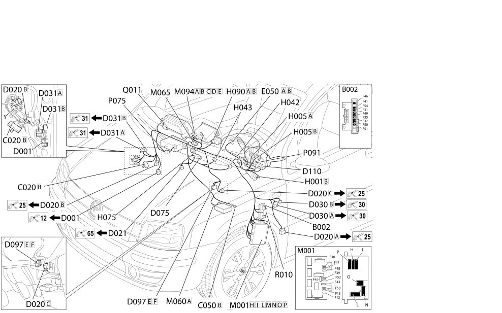

20 FACIA
- Path
- Electrical equipment > 2 WIRING > 20 FACIA
- Kind
- wiring harness
- Applies to
- all engines; all production periods
- Interactive page
- https://sloeber94.github.io/elrnDB-fPnd/en/#/169004327
Applies to: all engines; all production periods

Topics that link to this page (62)
- B002 JUNCTION UNIT UNDER DASHBOARD (DASHBOARD)
- C020B PASSENGER SIDE DASHBOARD EARTH (DASHBOARD)
- C020B PASSENGER SIDE DASHBOARD EARTH (DASHBOARD)
- C020B PASSENGER SIDE DASHBOARD EARTH (DASHBOARD)
- C050B AIR BAG SYSTEM EARTH (DASHBOARD)
- D001 FRONT/DASHBOARD COUPLING (DASHBOARD)
- D001 FRONT/DASHBOARD COUPLING (DASHBOARD)
- D020A DASHBOARD/REAR COUPLING (DASHBOARD)
- D020A DASHBOARD/REAR COUPLING (DASHBOARD)
- D020B DASHBOARD/REAR COUPLING (DASHBOARD)
- D020C DASHBOARD/REAR COUPLING (DASHBOARD)
- D021 DASHBOARD/AIR CONDITIONING-HEATER COUPLING (DASHBOARD)
- D030A DRIVER'S FRONT DOOR COUPLING (DASHBOARD)
- D030A DRIVER'S FRONT DOOR COUPLING (DASHBOARD)
- D030B DRIVER'S FRONT DOOR COUPLING (DASHBOARD)
- D030B DRIVER'S FRONT DOOR COUPLING (DASHBOARD)
- D031A PASSENGER FRONT DOOR COUPLING (DASHBOARD)
- D031A PASSENGER FRONT DOOR COUPLING (DASHBOARD)
- D031B PASSENGER FRONT DOOR COUPLING (DASHBOARD)
- D031B PASSENGER FRONT DOOR COUPLING (DASHBOARD)
- D075 RADIO PHONE COUPLING (DASHBOARD)
- D097E SHORT CIRCUITING COUPLING (DASHBOARD)
- D097E SHORT CIRCUITING COUPLING (DASHBOARD)
- D097F SHORT CIRCUITING COUPLING (DASHBOARD)
- D110 CLOCK SPRING AND STEERING WHEEL CONTROLS COUPLING (DASHBOARD)
- E050A INSTRUMENT PANEL (DASHBOARD)
- E050B INSTRUMENT PANEL (DASHBOARD)
- H001B IGNITION SWITCH (DASHBOARD)
- H005A STEERING COLUMN SWITCH UNIT (DASHBOARD)
- H005B STEERING COLUMN SWITCH UNIT (DASHBOARD)
- H042 DRIVER'S FRONT ELECTRIC WINDOW SWITCH (DASHBOARD)
- H042 DRIVER'S FRONT ELECTRIC WINDOW SWITCH (DASHBOARD)
- H043 PASSENGER'S FRONT ELECTRIC WINDOW SWITCH (DASHBOARD)
- H043 PASSENGER'S FRONT ELECTRIC WINDOW SWITCH (DASHBOARD)
- H075 PASSENGER AIR BAG DISABLING SWITCH (DASHBOARD)
- H090A SWITCH CONTROL PANEL (DASHBOARD)
- H090B SWITCH CONTROL PANEL (DASHBOARD)
- H090B SWITCH CONTROL PANEL (DASHBOARD)
- M001H BODY COMPUTER (DASHBOARD)
- M001H BODY COMPUTER (DASHBOARD)
- M001I BODY COMPUTER (DASHBOARD)
- M001L BODY COMPUTER (DASHBOARD)
- M001L BODY COMPUTER (DASHBOARD)
- M001M BODY COMPUTER (DASHBOARD)
- M001M BODY COMPUTER (DASHBOARD)
- M001N BODY COMPUTER (DASHBOARD)
- M001O BODY COMPUTER (DASHBOARD)
- M001O BODY COMPUTER (DASHBOARD)
- M001P BODY COMPUTER (DASHBOARD)
- M060A AIR BAG CONTROL UNIT (DASHBOARD)
- M060A AIR BAG CONTROL UNIT (DASHBOARD)
- M065 Info-telematic control unit (NIT) (DASHBOARD)
- M094A RADIO RECEIVER NODE (DASHBOARD)
- M094A RADIO RECEIVER NODE (DASHBOARD)
- M094B RADIO RECEIVER NODE (DASHBOARD)
- M094C RADIO RECEIVER NODE (DASHBOARD)
- M094D RADIO RECEIVER NODE (DASHBOARD)
- M094E RADIO RECEIVER NODE (DASHBOARD)
- P075 CD PLAYER/CHANGER (DASHBOARD)
- P091 AERIAL FOR FIAT-CODE (DASHBOARD)
- Q011 AIR BAG IN DASHBOARD (PASSENGER SIDE) (DASHBOARD)
- R010 MULTIPLE TESTER CONNECTION (DASHBOARD)